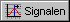
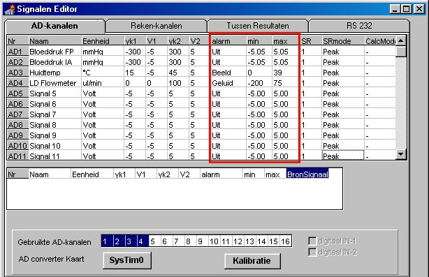

Alarm Instellingen
Druk op het bedieningspaneel van MIDAC op de knop Signalen ( ).
Het venster "Signalen Editor" komt dan op het scherm, bestaande uit meerdere tabbladen.
Op tabblad AD-kanalen worden alle gegevens van de ingestelde AD-kanalen in een tabel weergegeven, inclusief de alarm-instellingen. Die zijn in onderstaand voorbeeld van de Signalen Editor rood omkaderd.
De alarm-instellingen staan in 3 kolommen met van links naar rechts de headers alarm, min, max.
alarm
In deze kolom staat of alarmering is ingeschakeld voor het AD-kanaal.
Er zijn 3 mogelijkheden:
OPMERKING: Wanneer met de rechter muistoets in een vak in deze kolom wordt geklikt, verschijnt een submenu waaruit snel een keuze voor ÈÈn van de 3 genoemde mogelijkheden kan worden gemaakt.
min
Hier staat de waarde van de alarm-ondergrens als wereldwaarde (werkelijke waarde in de gekozen eenheid). Wanneer alarmering op een ondergrens ongewenst is, moet de alarm-ondergrens op een lage waarde ingesteld worden, die nooit bereikt zal worden ! De gewenste waarde voor de alarm-ondergrens kan direct in de tabel ingevoerd worden.
max
Hier staat de waarde van de alarm-bovengrens als wereldwaarde (werkelijke waarde in de gekozen eenheid). Wanneer alarmering op een bovengrens ongewenst is, moet de alarm-bovengrens op een hoge waarde ingesteld worden, die nooit bereikt zal worden ! De gewenste waarde voor de alarm-bovengrens kan direct in de tabel ingevoerd worden.

Wanneer alarmering voor een AD-kanaal is ingeschakeld, zal er altijd visuele alarmering plaatsvinden (uitzondering: bij een Signaalvenster van het type Grafisch-xt met uitgeschakelde venster-borders).
Visueel alarm bij Signaalvenster Grafisch-xt
Bij een Signaalvenster van het type Grafisch-xt wordt een alarm-toestand zichtbaar gemaakt doordat de kleurinstelling van het tekstlabel met de signaalnaam in een 1 seconde ritme wisselt tussen de normale kleurinstelling en witte tekst op een rode achtergrond. Bij een overschrijding van de alarm-bovengrens gebeurt dat bij het tekstlabel in de border aan de bovenzijde van het Signaalvenster. Wanneer het meetsignaal onder een ingestelde alarm-ondergrens komt, gebeurt dat bij het tekstlabel in de border aan de onderzijde van het Signaalvenster.
OPMERKING: Wanneer een venster geen onderborder heeft, wordt visuele alarmering altijd door het tekstlabel in de bovenborder zichtbaar gemaakt. Wanneer beide borders zijn uitgeschakeld is er G……N visuele alarmering !
Visueel alarm bij Signaalvenster Numeriek
Bij een Signaalvenster van het type Numeriek wordt een alarm-toestand zichtbaar gemaakt door een knipperende smalle rode balk aan de bovenzijde van het numerieke venster (wanneer het meetsignaal boven de ingestelde alarm-bovengrens komt) of aan de onderzijde van het numerieke venster (wanneer het meetsignaal onder de ingestelde alarm-ondergrens komt).
Akoestisch alarm
Een akoestisch alarm wordt zowel bij alarmering op bovengrens als op ondergrens hoorbaar gemaakt door ÈÈn type geluid, namelijk het geluidsbestand (WAV-bestand) dat bij de geluidsinstellingen van Windows95/98 (Instellingen / Configuratiescherm / Geluiden) is opgegeven bij Uitroepteken (bij Engelstalige Windows: Exclamation). Wanneer de alarm-toestand aanhoudt, wordt het akoestisch alarm steeds na 5 seconden herhaald.